Iris Lazzarini
Functional Analyst & Full Stack Developer
[ click to enter ]
> available for freelance projects
I build modern web applications that help businesses turn complex processes into clear, reliable digital products.
01 const project = {
02 clarity: "first",
03 solution: "built to last",
04 outcome: "measurable"
05 };I help businesses and teams transform real operational needs into digital products that are easier to use, maintain and grow. My work combines functional analysis with full stack development, so decisions stay connected to the people and processes behind the software.
I work with JavaScript, PHP, Python, APIs and relational databases, choosing the simplest reliable solution for each project. You get clear communication, structured delivery and software built around your goals, not a generic template.
See how I can helpFocused support for launching, improving or maintaining digital products.
Responsive websites that make your offer clear and credible on every screen.
Business tools tailored to your workflow, users and data instead of off-the-shelf compromises.
Clear requirements, flows and priorities before development begins.
Well-structured integrations and endpoints that let systems exchange data safely.
Organized data models and queries that keep information consistent and useful.
Practical improvements, fixes and ongoing care for software already in use.
A few examples of how analysis, design and development become useful products.

.jpeg)
.jpeg)
A data-focused platform for agricultural analysis and better field decisions.
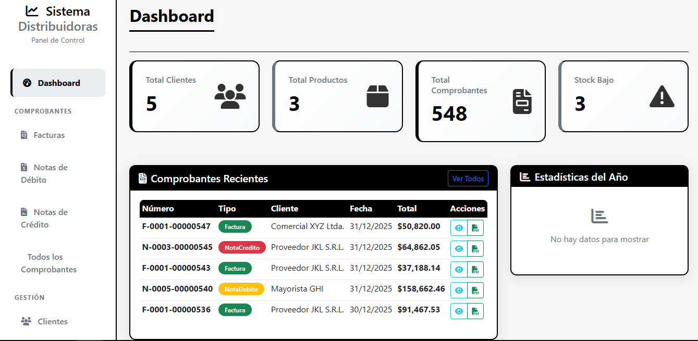
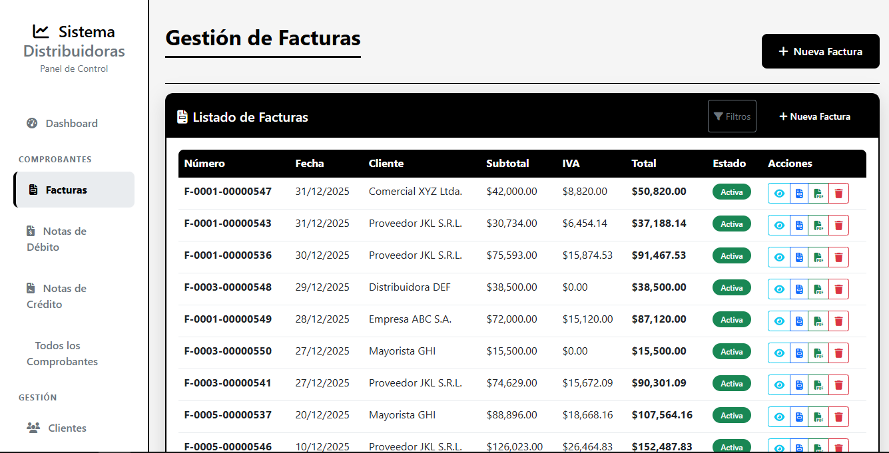


A modular invoicing and accounting tool designed for resilient day-to-day operations.


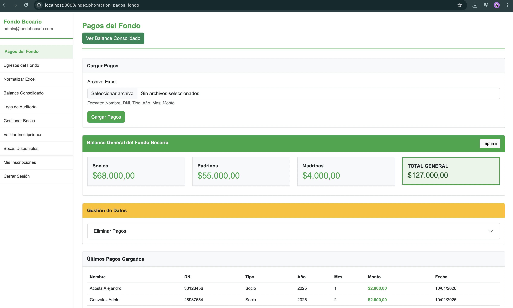

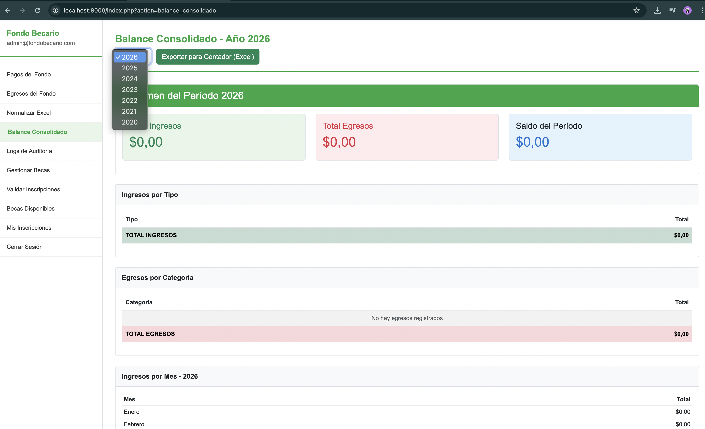

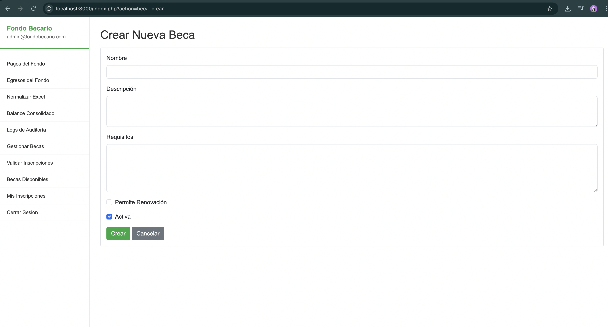
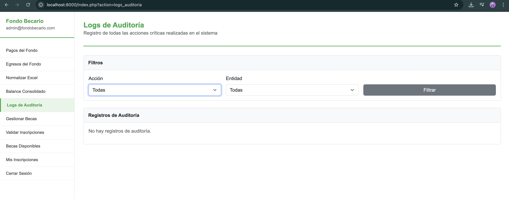
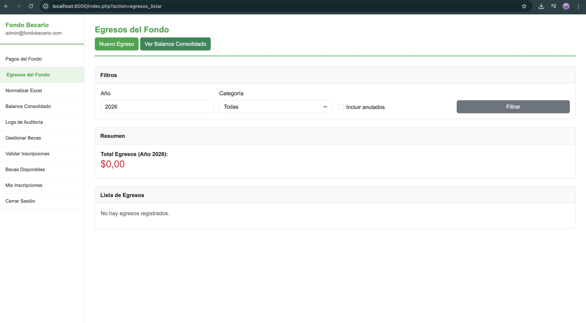


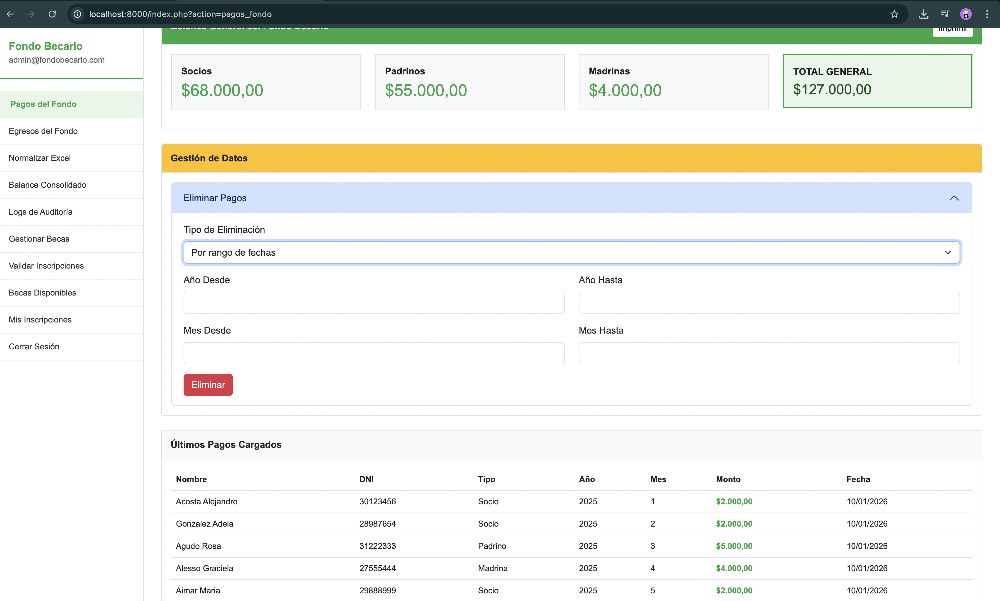
A financial management system that turns messy spreadsheets into reliable information.
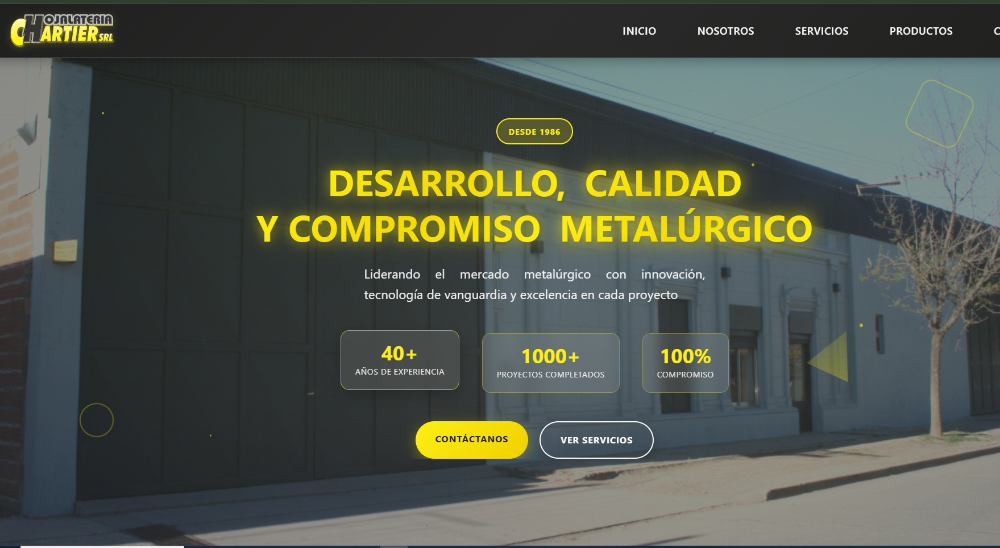
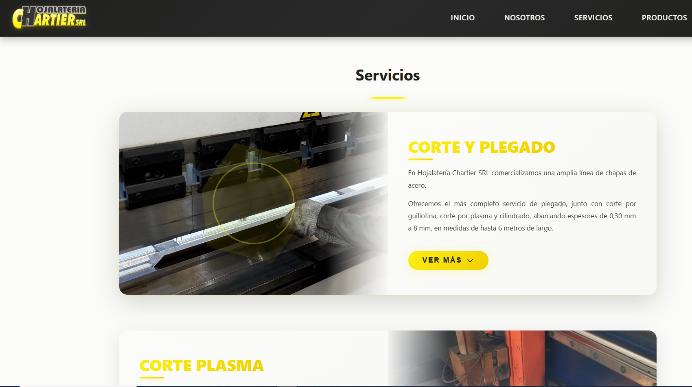
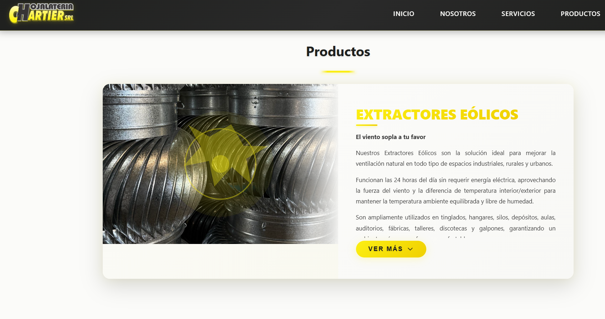
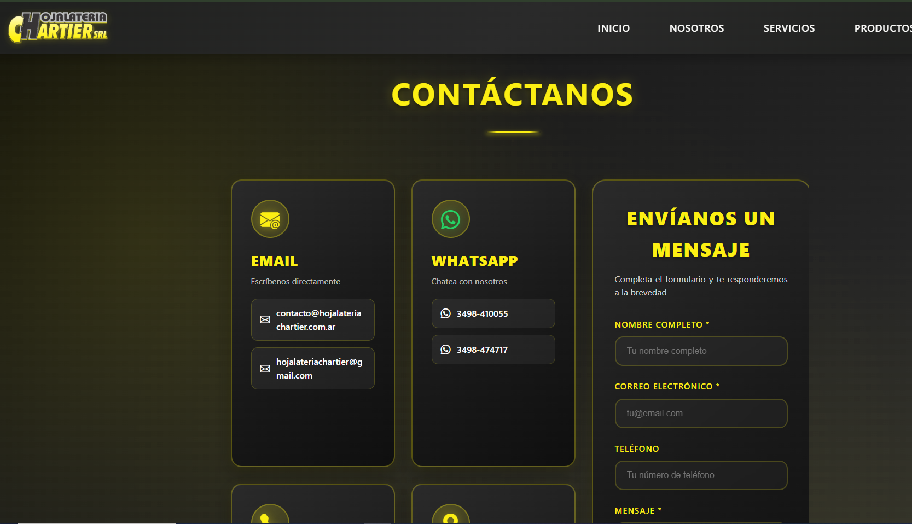
A focused one-page presence that makes services, products and contact options easy to find.
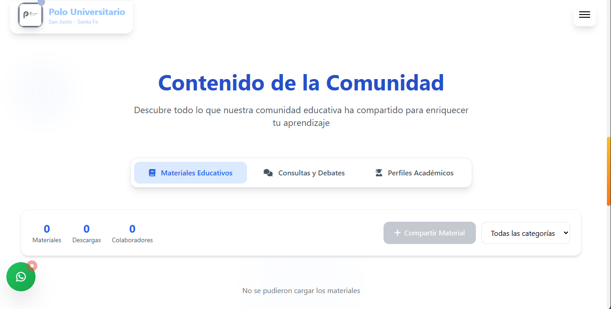
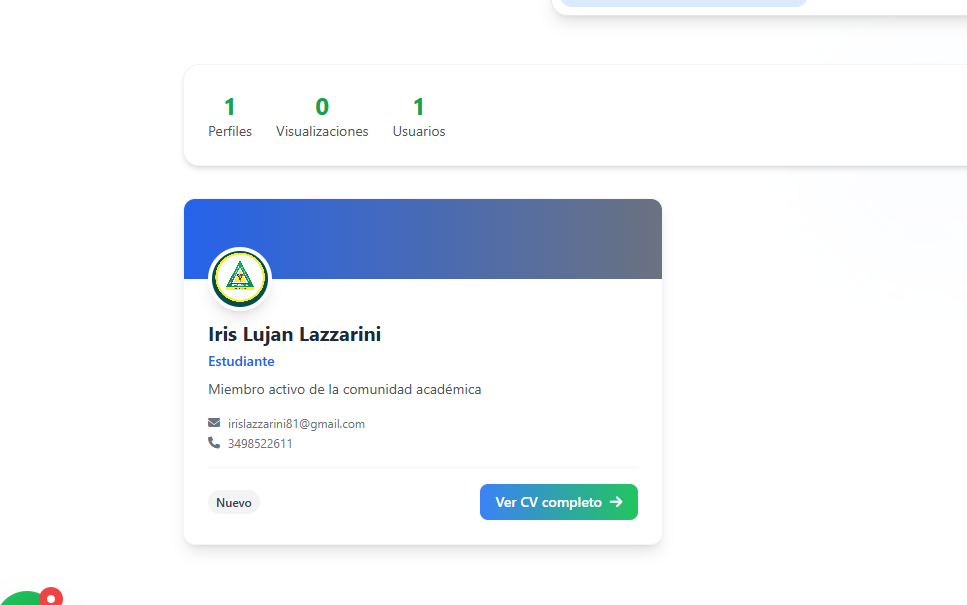
An educational platform connecting academic information, community and student resources.
A clear corporate website for an agricultural spraying company.
You care about the result. These are the tools I use to make it reliable.
Tell me what you are trying to improve, build or simplify. I will get back to you with the next practical step.